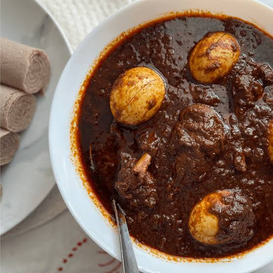

sausage

Doro Wet (also spelled Doro Wat or ዶሮ ወጥ in Amharic) is Ethiopia and Eritrea's national dish.
It is a rich, fiery, and deeply flavorful chicken stew.
Ingredients
- Chicken
- Onions
- Berbere Spice Blend
- Niter Kibbeh
- Aromatics
- Eggs
- Liquid & Broth
- Finishing Spices (Mekelesha)
Steps
- Prepare the Chicken
- Caramelize the Onions (The Base / Kulet)
- Add Aromatics and Berbere
- Braise the Chicken
- Add Eggs and Finish
- Serve
home